|
Deringing Cartoons by Image Analogies,
and
|


Abstract
-
- In this paper, we propose a novel method to reduce ringing artifacts in BDCT-encoded cartoon images using image analogies. The quantization procedure of BDCT compression (such as JPEG and MPEG) introduces annoying visual artifacts. Our main focus is on the removal of ringing artifacts that are seldom addressed by existing methods. In the proposed method, the contaminated image is modeled as a Markov random field (MRF). We 'learn' the behavior of contamination by extracting massive number of artifact patterns from a training set, and organizing them using tree-structured vector quantization (TSVQ). Instead of post-filtering the input contaminated image, we synthesize an artifact-reduced image. Our method is non-iterative and hence it can remove artifacts within a very short period of time. We show that substantial improvement is achieved using the proposed method in terms of visual quality and statistics.
Download Paper
- Acrobat: dering.pdf (1.4 MB)
Demo Movie
The following movies demonstrate the procedure and results of the proposed deringing method.
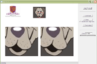 This sequence demonstrates the procedure and result of the proposed method. (Size: 16.6 MB)
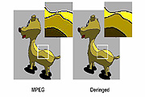 This sequence shows the result of deringing a MPEG video. (Size: 7.11 MB)
Download Software
Our implemented prototype, arti, can be downloaded and tested from arti homepage.
Comparison
The following table visually and statistically compares the original, the contaminated and the artifact-reduced (synthesized) images. Results of other methods are also shown. Four test images are tested. All of them are not inside the training set. The first column shows the test images (shrinked for visualization) while the original full-size images are accessible on the second column. The third column shows the JPEG contaminated images. The fourth column shows the artifact-reduced results from our method. The fifth to the eighth columns show the results of bilateral filtering, signal adaptive filtering, Zakhor method (POCS), and baseline image analogies.For statistical comparison, PSNR and SSIM with respect to the original image are listed below each deringed image. The value inside the round bracket indicates the PSNR and SSIM improvements comparing to the contaminated image.
For a quick side-by-side comparison, the boxed region in each test image is blown up on columns 2 - 9. Besides, the corresponding full-size images are accessible by clicking the blow-up icons in the table.
| Original | JPEG | Ours | Bilateral filter | SAF | Zakhor (POCS) | Baseline image analogies | |
| 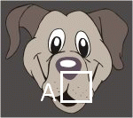 dog |
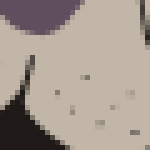 | 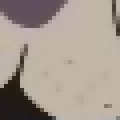 | 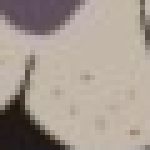 | 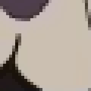 | |||
| PSNR (dB) | 34.09 | 34.93 (+0.84) |
34.63 (+0.54) |
29.72 (-4.37) |
27.81 (-6.28) |
23.81 (-10.28) | |
| SSIM | 0.943 | 0.975 (+0.032) |
0.966 (+0.023) |
0.944 (+0.001) |
0.920 (-0.023) |
0.891 (-0.052) | |
| 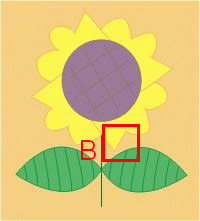 sunflower |
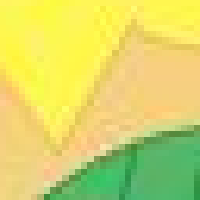 | ||||||
| PSNR (dB) | 30.60 | 30.80 (+0.20) |
30.67 (+0.07) |
30.12 (-0.48) |
30.17 (-0.43) |
19.82 (-10.78) | |
| SSIM | 0.889 | 0.901 (+0.012) |
0.897 (+0.008) |
0.897 (+0.008) |
0.892 (+0.003) |
0.791 (-0.098) | |
| 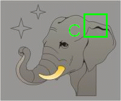 elephant |
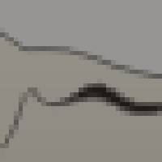 | 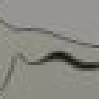 | 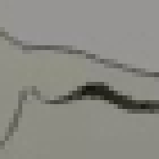 | 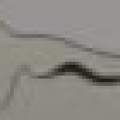 | 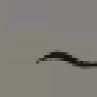 | ||
| PSNR (dB) | 36.29 | 36.63 (+0.34) |
35.31 (-0.98) |
35.56 (-0.73) |
33.24 (-3.05) |
22.05 (-14.24) | |
| SSIM | 0.953 | 0.971 (+0.018) |
0.949 (-0.004) |
0.954 (+0.001) |
0.937 (-0.016) |
0.762 (-0.191) | |
tripod |
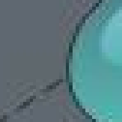 | 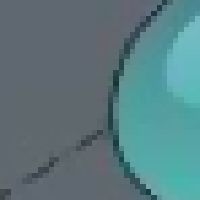 | 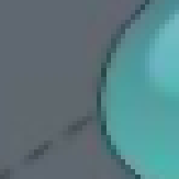 | 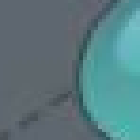 | 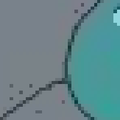 | ||
| PSNR (dB) | 36.13 | 36.76 (+0.63) |
35.51 (-0.62) |
35.17 (-0.96) |
32.42 (-3.71) |
20.15 (-15.98) | |
| SSIM | 0.957 | 0.970 (+0.013) |
0.959 (+0.002) |
0.956 (-0.001) |
0.944 (-0.013) |
0.844 (-0.113) |